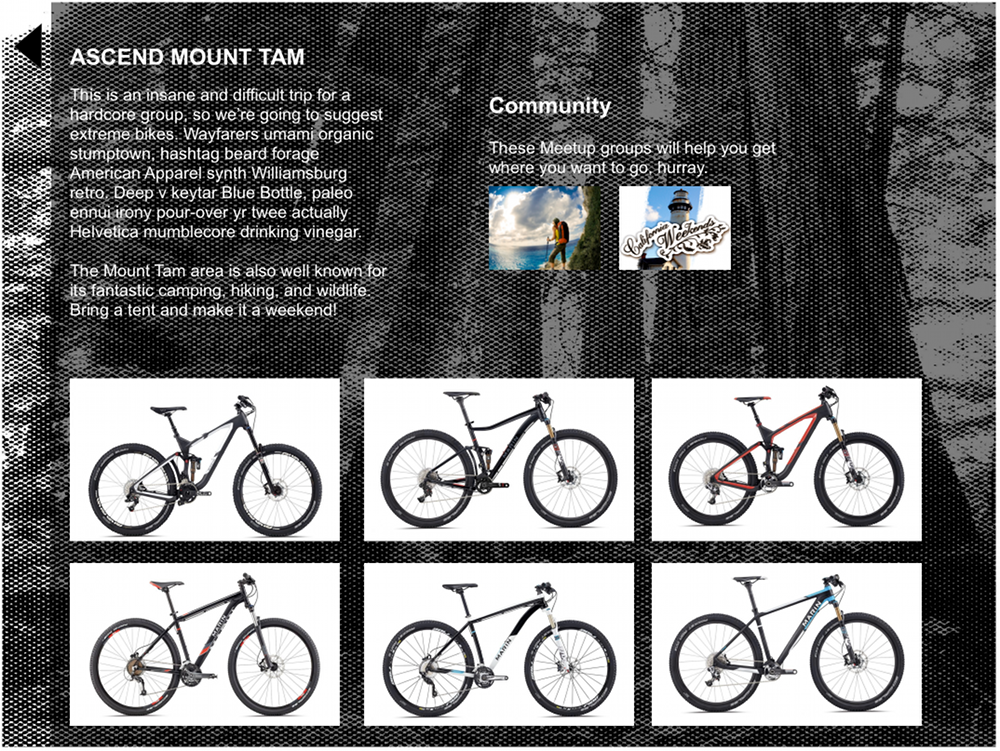
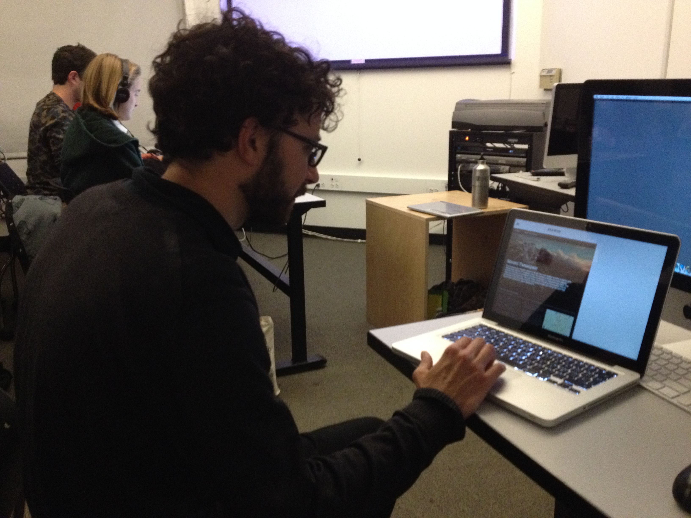

Bike Marin
Increasing brand awareness of Marin Bikes with a mobile app for outdoor sports enthusiasts and mountain biking beginners
"Find equipment forbeginners trail in Mt Tam"
Prototype
Context
This project is related to:
UX
Mobile App
Outdoors
Biking
Trails
Travel
Product Design
Product Strategy
Interaction Design
Human-Computer Interaction
ABOUT MARINBIKES & THE PROJECT
This was a student project at General Assembly. Marin Bikes want to increase brand awareness and expand their market. For this reason they want to provide an added-value content in form of a mobile app for outdoor activities enthusiasts.
Challenges
•Convincing my team to advocate for users needs over making a product to only help sell bikes in a store
•A constraint was to only use Axure as prototyping tool
Timeline 2 weeks as UX product designers of UXDi course at General Assembly Spring 2014 My Role - Team UX Product Designer and Researcher - 2 General Assembly students. One with background in art history and theoretical research. Another with background in project management with knowledge of the technological constraints.
Problem - Solution
Problem found
Outdoor sports enthusiasts don't know much about biking brands. We understood we first had to persuade people to try mounting biking and grow fidelity to the brand from the start so new bikers associate mountain biking to Marin.
However, people fear they won’t use a mountain bike enough to justify the purchase. They are intimidated by specifications and trip planning logistics such as driving to the trails.
Proposal
A product that connects their love for nature to mountain biking and addresses their fears. The app encourages people to explore the Marin county through biking or any other outdoor sport available.
•Provoke desire to explore (imagery)
•Provide information needed to enjoy the experience (trail info, skill level, community events+carpools)
•Teach what bike/equipment to select. Explaining why it is suggested and what each part means. (interactive chart)
Process
1. Research
- Survey
- Interviews + Insights
- Competitive Analysis
- Research synthesis
- Personas+Scenarios
2. Ideation
- Brainstorming + sketching
- User Flows + Product Concept
- Rethinking Strategy
- App architecture
- Design definition
3. Prototyping
- Visual Design
- Wireframes
- Axure Prototype
- User testing
- Iterations
4. Presentation
- Sitemap and user flow images
- Presentation Deck
- Client Presentation
- Next generation of wireframes based on user testing
"My Role" Key
: Solo.
: Co-created with team.
: I finished on my own.
1. Research
Survey
My partner did a survey that allowed us to recruit part of the people interviewed. Others were recruited by personal connections and meet ups related to mountain biking.
Insight
•Friends are the number one reason people try new hobbies
•The mountain biking community tends to be frugal and in search of experiences
Pain Points to practice mountain biking:
•Interested, but reluctant because lack of : time, money, car.
•Intimidated by specs when trying to buy a bike
•Interested but no friends who practice
Motivations to start mountain biking:
•Friends practicing
•Mental State: connection to nature.
•Physical challenge and skill building
I asked my colleague for her interview findings and organized the information so we could all see the patterns. Looking back I should have also provided a list of insights accompanied with testimonies instead of waiting for them to trust my conclusions.
My conclusion
People are interested in mountain biking for different reasons but they all need help overcoming coming obstacles to actually get involve. Providing a guide of how to choose a bike is the last step. Before that, we must show people is good investment and a fulfilling experience they don't want to miss. However, my team thought by helping people make the purchase in-store it would be enough.
Personas
These personas are the synthesis of the interviews. We divided and grouped the information across several variables. These following variables: . Then, we gave each group the personality traits of the correspondent people interviewed. The main persona is Amy because she enjoys nature and is willing to learn and try. Other personas would benefit from a product that addresses her needs.
2. Ideation
Brainstorm sketching, Product concept + MVP, and User flows + Scenarios
1. We brainstorm ideas sketching them in sessions of 5 min.
2. We decided the overall concept of the product, features and prioritized them according to the needs of the persona Amy
3. We started sketching and making the entire flow of the app imagining what Amy would do in different situations (scenarios)
Change of Strategy + Final User Flow and App site
tbd
My partner suggested doing a "design studio" sketching session between the 3 of us in order to brainstorm our ideas of what the product should be
We decided the product's value proposition. At first it was an tablet app to help sell bikes at the store. While this solution was partly logical, it didn't consider that outdoor sports enthusiasts don't go to the store in the first place.
We continued thinking of a user flow for the store app. The flow started with teaching bike specs and then suggesting experiences where they could use the bike. After checking out the competition my team realized we needed to rethink our strategy.
I proposed to focus on making the people see that all their fears had a solution and that their interest align with Marin's. I convinced my team by explaining we didn't have to throw away our work, but simply to reinterpret it. This image shows how I reinterpreted the previous user flow.
User flow and scenario used for Amy
User flow of the prototype in this portfolio
Final app map
3. Prototyping
Visual Design and first iterations
My colleague had more experience with Axure. He started the prototype and he defined the visual design of the app. I assisted him with part of the wireframes and clickable items in Axure
First wireframes and tap-able prototypes

Final Prototype and User Testing
We did 9 iterations. We learned that people didn't want a catalogue of bikes. They needed information relevant to enjoy the experience such as: a better map, equipment, ways to connect to people with cars, an specific trail information like amenities and terrain. The last prototype we tested can be found here
User testing of final prototype.

Wireframe of last prototype tested
Wireframe of the prototype for mobile instead of tablet
I made the last iteration of wireframes as next steps for the final presentation and made a prototype in InVision for this portfolio
a beginners trail"
Prototype
4. Presentation
Presentation
tbd
Result and learnings
tbd
ask for
– Recommendation by Bojana, Susan or Nick
former instructor of General Assembly